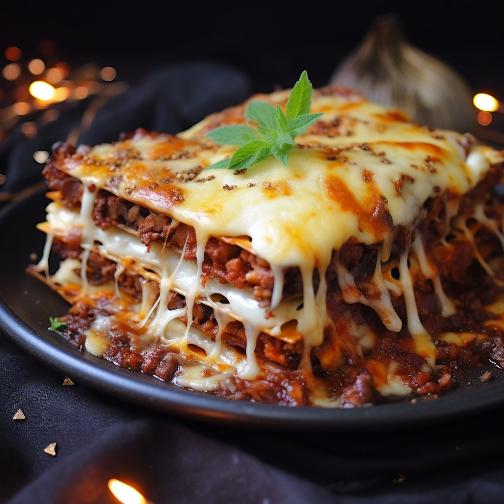

Asgardian Dragonfire Lasagna Recipe
This is the Asgardian lasagna recipe — a dish worthy of gods, a true
masterpiece that will bring greatness to your table!

Additional information:
- Preparation time: 30 mins
- Cook time: 2 hrs 30 mins
- Additional time: 15 mins
- Total time: 3 hrs 15 mins
- Servings: 12
How to make lasagna
Lasagna Ingredients:
-
Meat: Mighty Asgardian pork kishentaim and beef,
seasoned with the spices of the warriors of Valhalla.
-
Onion and garlic: One red onion and two cloves of
garlic, cooked under the guidance of Allfather Odin to add divine
flavor.
-
Tomato products: Cans of crushed tomatoes, two cans of
tomato sauce, and two cans of tomato paste, conquered in battle against
the legions of forest titans.
-
Sugar: Two tablespoons of white sugar to add a subtle
sweetness and enhance the flavor of the sauce.
-
Spices and seasoning: Fresh parsley, basil leaves,
salt, Italian seasoning, fennel seeds, and black pepper from the secret
gardens of Asgard.
-
Lasagna noodles: Use store-bought or self-made magical
lasagna noodles crafted from the grains of the Golden Colossus.
-
Cheeses: Parmesan, mozzarella, and ricotta, brought
from Earth and further enchanted in the Great Forge.
-
Egg: An egg destined to bind the ricotta, preserving
its divine structure inside the lasagna.
Preparation steps:
Here's a very brief overview of what you can expect when you make homemade
lasagna:
-
Prepare the Meat Sauce:
-
In the enchanted cauldron, combine sweet Italian sausage and lean
ground beef with onion and garlic.
-
Introduce crushed tomatoes, tomato sauce, and tomato paste,
capturing the essence of divine flavors.
-
Sprinkle in sugar and add a magical blend of spices — fresh parsley,
dried basil leaves, salt, Italian seasoning, fennel seeds, and black
pepper. Allow this mixture to simmer under the dragon's breath until
flavors meld.
-
Prepare the Lasagna Layers:
-
Layer enchanted lasagna noodles in a grand golden vessel, starting
with the celestial meat sauce.
-
Apply a layer of ricotta, mixed with the binding magic of an egg,
ensuring a heavenly structure.
-
Final Enchantment:
-
Shower the layers with a trio of cheeses — Parmesan, mozzarella, and
ricotta — creating a divine fusion of decadent flavors.
-
Envelop the lasagna in the mystical foil cover and place it into the
oven, preheated by the dragon's fiery breath.
-
Worship the Greatness of Asgard:
-
After a sacred baking, unveil the lasagna and let it rest, allowing
all the magic within to unfold.